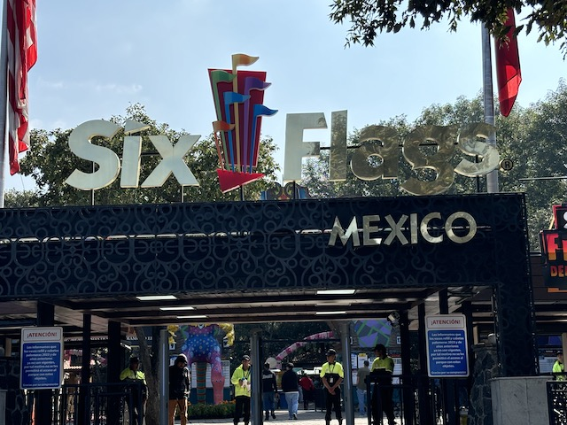
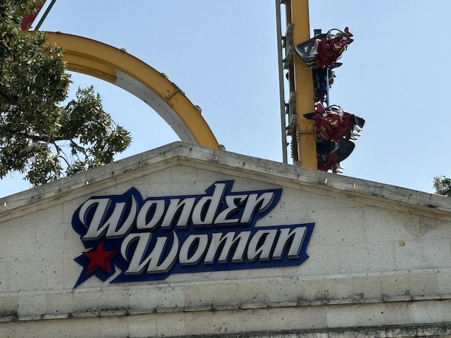
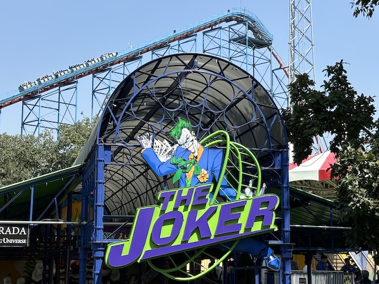
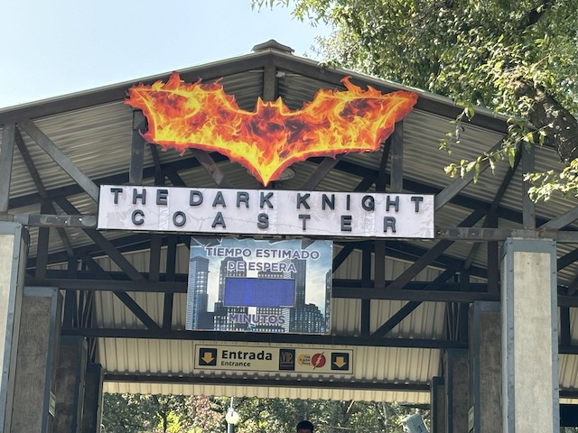
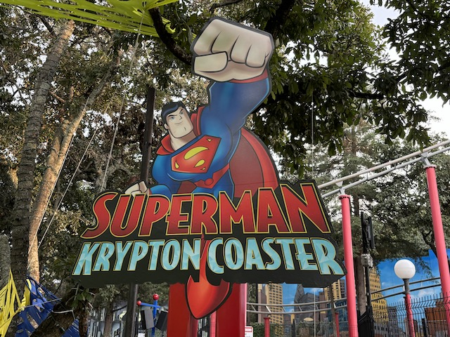
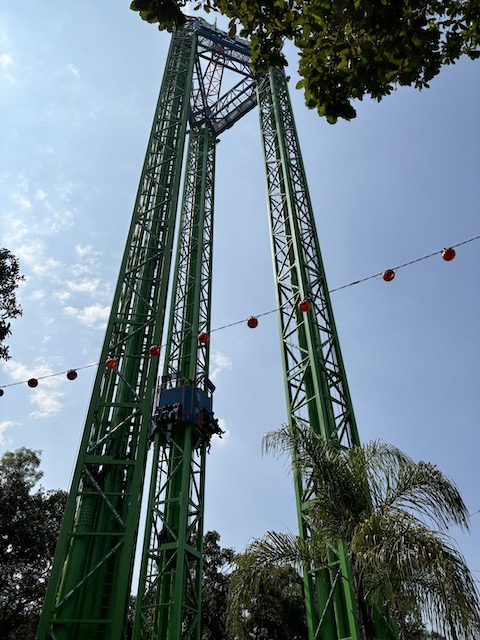
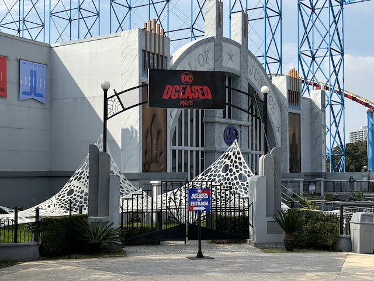
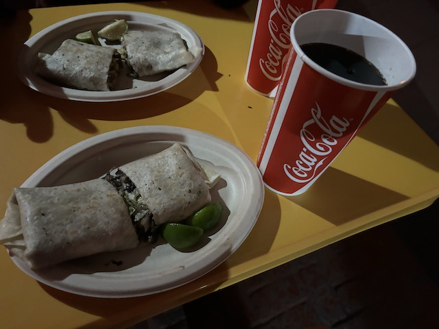
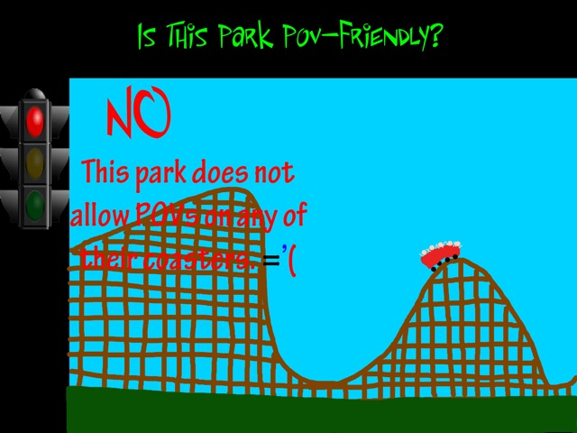

| |
Six Flags Mexico Review

Six Flags Mexico is a fun amusement park, located right on the outskirts of Mexico City. This is sort of the red-headed stepchild of Six Flags parks, being mostly forgotten about since.....it's one of the few Six Flags parks not located in the United States. But from the testimonies of many of the enthusiasts who have made it down from America into Mexico, many of them have really praised the park, citing it to be one of the better Six Flags parks, with some really cool rides, great food, and run really well. And.....hey. That's partially true. I'm not going to lie. Some of the hype that other enthusiasts have been giving to Six Flags Mexico is a little overblown. It's not some secret hidden gem that's just waiting to be discovered that is so unlike any other park out there in the world. But at the same time, Six Flags Mexico is a solid park. It has a nice sort of charm to the park, and the people who run this park really do a FANTASTIC job. And while the majority of the coasters here are nothing special, they do have a couple of unique and special coasters, with Medusa Steel Coaster and Superman El Último Escape being two stand-out coasters that give the park some really nice flavor (reviews of both down below). There are a lot of nice things in here that in the grand scheme of things, truly stand out. The flat rides aren't anything to write home about. Same goes for the dark rides, the theming, the food, or anything else that really makes the park what it is. Nothing at Six Flags Mexico is going to wind up in any of our Top 10 Lists (barring something either drasticly happening to the park, or I decide to create some abnormal Top 10 List ideas). But at the same time, everything is good. Nothing at the park fails its mark. I'll go over how it does a good job in every category down below. But Six Flags Mexico is a really nice park. And when you compare Six Flags Mexico to the other coaster offerings in Mexico City (or even Mexico as a whole for the most part), it does a FANTASTIC job anmd is a great place to go to have some fun and thrills when in Mexico City.
Rollercoasters
There is a link to a review of all the Rollercoasters at Six Flags Mexico.
Please keep in mind that there is no review of Speedway Stunt Coaster because it didn't exist when I last visited.
Top Coasters
Medusa Steel Coaster Review

Really Good Coasters
Superman El Último Escape Review

Fun Coasters
Wonder Woman Review

Decent Coasters
Joker Review

Mediocre Coasters
Batgirl Batarang Review

Batman the Ride Review

Family Coasters
Dark Knight Review

Kiddy Coasters
Superman Krypton Coaster Review

Tsunami Review

Flat Rides
Here are the reviews of all the Flat Rides at Six Flags Mexico. Now the best flat ride here that I did would be Kilahuea Triple Tower. This is the parks S&S Tower. Now this may seem a little lackluster. S&S Towers are pretty common and are found at so many parks around the world. But A: Six Flags Mexico doesn't have any (serious) competition. B: This is a GOOD ONE!!! First of all, this is a Combo Tower. Meaning this thing is both a Space Shot AND a Turbo Drop. So you really get the best of both worlds with S&S Towers like this. B: This is a BIG ONE. So you get launched up really high, do a ton of cool bouncing, before yeah. It just drops you back down! And to make it even better, this gives you not only a GREAT view of the park, but you can see a decent amount of Mexico City if you know where to look. Yeah. Easily one of the best S&S Towers out there and something I definately recommend checking out. The other major flat ride at the park I think is worth checking out would be Supergirl Sky Flight. This is the parks Starflyer. It's an average height starflyer. About 200 ft (61 meters). These things are fun. A nice relaxing ride with a GREAT view of the park. And of course, being that high up, just held up by these sort-of playground chains (No, they're actually very safe. But it feels like it) is pretty cool. I also did their chairswings, which were pretty fun (look out for bushes) and the parks carousel is a GREAT one. Double decker carousels are always a really nice thing. Those are the flat rides I did at Six Flags Mexico. They also have Crazanity, which is the parks giant frisbee. These are very fun rides that I HIGHLY would recommend to a local who hasn't done one of these before. I just skipped it due to having this exact ride back at home and not wanting to wait in the long line. They also have a trabant, as well as a bunch of kiddy flat rides.

One of the best S&S Towers.
Dark Rides
All right. Now I didn't do Justice League during my visit to Six Flags Mexico. Not by choice, it was closed when I went. However, it was closed for a good reason. You see, they decided to build a maze for Fright Fest inside the dark ride. So you were walking through the ride area that they just built a maze on. Which....SO COOL!!!! I REALLY wish I did the maze. Hmm. Perhaps this would be a good idea and maybe Six Flags Magic Mountain should follow in Six Flags Mexico's footsteps and build a Fright Fest maze inside their Justice League.

I really hope they keep this maze for future Fright Fests.
Water Rides
I didn't do any of the water rides at Six Flags Mexico. Sorry, but I'm not doing your rapids ride when its a cool day in October. Maybe if I come back during the summer.
Dining
The dining at Six Flags Mexico is pretty good. Sure. It's not great when you compare it to all theme parks. However, when specifically comparing it to Six Flags parks, this actually wins as the best Six Flags park in the dining department. Mainly because.....this is the ONE Six Flags park that serves.....authentic Mexican food! Yeah. For locals just visiting Six Flags Mexico because its the local theme park, this doesn't seem like anything special. But if you're someone who visits theme parks around the world, then the authentic Mexican food here.....actually stands out! I know I live in California, which has GREAT Mexican food, but it's still Americanized (but I love it regardless). So it was really cool to finally get to try an authentic Mexican burrito. And I tried it at Six Flags Mexico of all places. Aside from that, the rest of the food from what I can tell, seems to be your standard theme park. Just with great authentic Mexican food also thrown in since....this is Six Flags Mexico.

I may love the monsterous Americanized Burritos back home, but these are really freaking good too.
Theming and Other Attractions
Here are the reviews of all the other stuff at Six Flags Mexico. As far as theming goes, this place is.....far from super well themed by global theme park standards. But you have to remember. This is a Six Flags park. And....this chain is NOT well known for its theming. So.....the mimimal theming this place has is pretty good by Six Flags standards. The cowboy themed area is......decent. Got a nice little bit of theming. Same goes for the Tropical section. Honestly, the worst themed area would be the DC Universe area, which....yeah. That's just a standard Six Flags theming. As far as other things to do, I know they have some shows. But I never saw any of them. As for events, I can't officially judge since I never did any of the actual mazes, but Mexican Fright Fest did look REALLY cool! I already praised them using Justice League and making a haunt maze out of that. But the scare zones and just the atmosphere of Mexican Fright Fest was REALLY cool. I definately wish I did that. It makes me feel like they must do other festivals really well and out their all in on this sort of stuff.
In Conclusion
Six Flags Mexico is a really fun theme park. Sure, on a global scale, this isn't the best theme park by any means. And I know some of the other enthusiasts who have made it to this park have REALLY liked this park and highly praised everything about this park. And while I wouldn't go quite that far, I will admit that Six Flags Mexico is a GREAT park. It has a decent coaster with a couple of REALLY strong coasters in Medusa Steel Coaster and Superman El Último Escape. And as for everything else, its sort of.....not the best out there, but they do a DAMN good job for what it is. Their flat rides aren't great, but they put great effort in, particuarly in their S&S Tower. Their dining is average for the mst part, with the one exception of having GREAT and truly authentic Mexican food (that's only a big deal if you're visiting as a foreigner), and the events that the park holds seem to be of really high quality. It's just a really well run theme park with stuff that may not be the best in the world, but do a FANTASTIC job for the local audience and for what else is in the area, REALLY works QUITE WELL!!! I know the park likes to market itself as the best theme park in all of Latin America. I can't officially make a decleration on that since.....this is the ONLY theme park I've visited in Latin America (so far). But from looking at the competiton, yeah. I think that's a fair assumption to make. If you find yourself in Mexico City, I DEFINATELY recommend checking out Six Flags Mexico. It has a couple banger roller coasters, and is just an overall really fun and well managed theme park. Thumbs up.
Enthusiast FAQs.
*Are there kiddy coaster restrictions? - Nope. You can ride both Superman Krypton Coaster and Tsunami.

Tips
*Get plenty of rides on Medusa Steel Coaster and
*Get here early in the morning. Lines are much shorter then due to the vast majority of Mexicans not being morning people.
*If there's a special event going on when you're there, don't miss it!
*Have Fun!!!!
Theme Park Category:
Amusement Park
Location
Mexico City, Mexico
Last Day Visited
October 18, 2014
Video
I don't have enough footage for a Six Flags Mexico video. At least not a good one.
Complete Update List
2024
Mexico 2024
Here's a link to the parks website.
Home
|